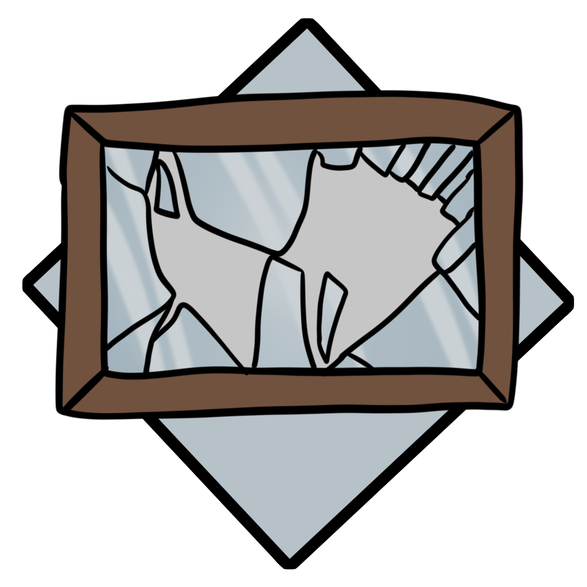

Old furniture lays collecting dust in the remains of tall buildings.

Even the currency of these cities can be found lying around.
For other areas, life before the war seems almost preserved, nature not having long enough to fully reclaim the land.